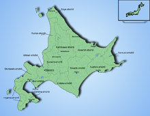
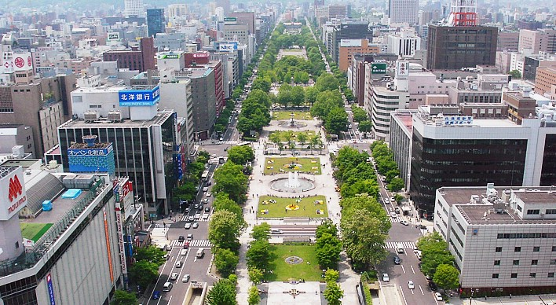

Willkommen Sie auf unserer Webseite. Wir widmen uns dem Thema japanische Inseln.
Japan hat vier grösste Inseln - hier befindet sich die Liste. Nach dem Klick werden Sie automatisch auf die Website der gewünschten Insel weitergeleitet.
Diese Website beschäftigt sich mit der Insel Hokkaidō.
Hokkaidō ist die zweitgrößte Insel Japans und die größte und nördlichste Präfektur Japans. Übersetzt bedeutet der Name Hokkaidō soviel wie Nordsee-Route. Von der Öffnet einen internen Link im aktuellen Fenster. Hauptinsel Honshu wird Hokkaido durch die Straße von Tsugaru abgegrenzt. Verbunden sind die beiden Inseln durch den Seikan-Tunnel, der mit 53 Kilometern Länge der längste Tunnel der Welt ist. Hokkaidō hat eine für Japan untypisch geringe Bevölkerungsdichte und weist eine vergleichsweise niedrige Bevölkerungszahl von 5,6 Millionen auf. Die größten Städte auf Hokkaidō sind Sapporo, Hakodate und Asahikawa. Sapporo ist zugleich die Hauptstadt Hokkaidōs. Das Klima Sapporos unterscheidet sich aufgrund seiner Lage ebenfalls vom Rest Japans. Die durchschnittliche Temperaturen in den Sommermonaten liegt bei 22 Grad Celsius und in den Wintermonaten bei -12 bi -4 Grad. In den Monaten Juni und Juli bleibt Sapporo auch von der für Japan typischen Regenzeit verschont. Im Winter ist Sapporo aufgrund seiner niedrigen Temperaturen und des häufigen Schneefalls ein beliebtes Ziel für Wintersportler, jedoch entstehen jeden Winter auch heftige Schneestürme, welche oftmals ein regelrechtes Schneechaos auslösen. Die wirtschaftliche Bedeutung Hokkaidōs liegt vor allem in der Landwitschaft. Es ist Japans wichtigster Lieferant von Kartoffeln, Reis, Gemüse und Fisch. Auf Hokkaidō existiert nur eine Leichtindustrie, die von vergleichsweise geringer Bedeutung ist. Der Großteil der Bevölkerung ist im Dienstleistungsektor und widmet sich den zahlreichen (japanischen) Touristen.
Quellen: